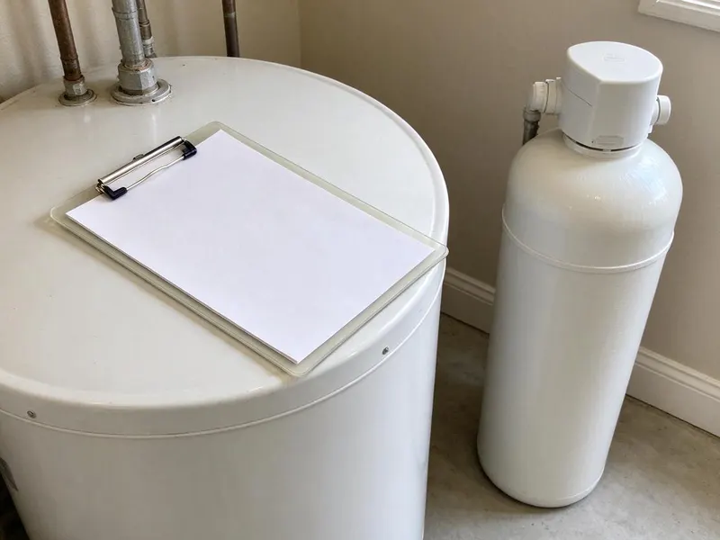

Water Softener Maintenance in Baytown, TX
Hard water is a common issue in Baytown, TX, but regular water softener maintenance from DFJ Plumbing keeps your system running smoothly and extends its lifespan.
- Fast, Reliable Service
- Expert Technicians
- All Major Brands
- Fair Pricing
Protect Your Plumbing, Call for Service in Baytown, TX.
Don't let hard water damage your appliances and pipes. Contact DFJ Plumbing today for expert maintenance.
Professional Water Softener Maintenance for Baytown, TX Homes
Regular water softener maintenance from DFJ Plumbing is crucial for extending the life of your unit and preventing costly repairs. We ensure your system is optimized for the specific water conditions in Baytown, TX, delivering consistent soft water for your household.
Our expertise includes:
- Salt bridge removal and brine tank cleaning
- Resin bed regeneration and media inspection
- Valve lubrication and system calibration

Additional Plumbing Maintenance Services in Baytown, TX
Our maintenance and specialty plumbing services in Baytown, TX protect your home year-round and extend the life of every system.


Customers
Why Choose DFJ Plumbing for Water Softener Maintenance in Baytown, TX?
Maintaining your water softener isn't just about comfort, it's about protecting your home's entire plumbing system from the damaging effects of hard water. Our detailed maintenance checks prevent scale buildup and extend the life of your appliances.
- Prevent Scale, Regular maintenance prevents mineral scale buildup in pipes and appliances, common with Texas hard water.
- Extend Lifespan, Proper care significantly extends the operational life of your water softener system.
- Save Energy, An efficiently running water softener uses less salt and water, saving you money on utilities.
Citywide Coverage
DFJ Plumbing proudly serves every neighborhood of Baytown, offering prompt and reliable water softener maintenance. No matter where you are located within the city limits, our expert plumbers are ready to assist you.
Experienced Team
Our team of licensed plumbers brings years of specialized experience in water softener systems to every maintenance job. They are trained on the latest technologies and best practices to ensure your unit performs optimally.
Safety-First Approach
Safety and adherence to local plumbing codes are paramount in all our water softener maintenance services. We ensure every adjustment and repair meets or exceeds Texas regulations, providing you peace of mind.
Trusted Certified Baytown Plumbing Services Professionals
At DFJ Plumbing, we take pride in providing licensed, certified plumbing services throughout Baytown, TX. Backed by recognized industry credentials, our experienced plumbers combine technical skill with genuine customer care. Whether it is repair, installation, or maintenance, we follow strict safety and quality standards to deliver long-lasting results you can trust.
Call Us Now PHCC Plumbing Contractor Recognition
PHCC Plumbing Contractor Recognition Better Business Bureau (BBB) Accreditation
Better Business Bureau (BBB) Accreditation Angi Certified Pro
Angi Certified Pro ISO 9001 Quality Management Certification
ISO 9001 Quality Management CertificationThorough Water Softener Maintenance Services in Baytown, TX
Routine Water Softener Tune-Ups in Baytown
Our routine tune-ups involve a comprehensive inspection of your entire water softener system. We check for proper salt levels, inspect the brine tank for salt bridges, and ensure the resin bed is functioning effectively. This preventative service is vital for Texas homes, where hard water minerals can quickly impact system performance if not regularly addressed.

Brine Tank Cleaning and Inspection in Baytown, TX
Over time, sludge and insoluble materials can accumulate in your brine tank, hindering the softening process. Our maintenance includes thoroughly cleaning the brine tank, inspecting for any cracks or leaks, and ensuring the float valve operates correctly. This step is crucial for the efficient regeneration of your water softener in Baytown, TX.
Resin Bed Analysis and Regeneration in Baytown
The resin bed is the heart of your water softener, where ion exchange occurs. During maintenance, we analyze the condition of the resin beads and ensure the regeneration cycles are programmed correctly for your household's water usage. Proper resin bed function is key to consistent soft water throughout your home in Baytown.
Valve and Controller Diagnostics in Baytown, TX
The control valve and electronic controller regulate the entire softening process. Our technicians perform diagnostic checks to ensure these components are operating accurately, adjusting programming as needed. We check for wear and tear on moving parts and lubricate them to prevent future issues, keeping your water softener reliable in Baytown, TX.
Hardness Test and Water Quality Check in Baytown
As part of our maintenance, we conduct a water hardness test to verify your water softener is effectively reducing mineral content to optimal levels. This ensures you are receiving the soft water benefits you expect and allows us to fine-tune your system if necessary. We aim for consistent water quality in every Baytown home we serve.
Preventative Maintenance for All Brands in Baytown, TX
Whether you have a Fleck, Culligan, Kenmore, GE, or EcoPure system, our technicians are trained to service all major water softener brands. Our preventative maintenance protocols are adapted to the specific requirements of each manufacturer, ensuring your unit receives the best possible care, regardless of its make or model in Baytown, TX.
Commercial Water Softener Maintenance in Baytown
Businesses in Baytown also rely on soft water for various operations, from laundromats to restaurants. DFJ Plumbing offers specialized commercial water softener maintenance to keep your business running smoothly. We understand the higher demands placed on commercial units and provide thorough service to minimize downtime and protect your investments.

Annual Maintenance Plans in Baytown, TX
For ultimate peace of mind and long-term savings, consider our annual water softener maintenance plans. These plans ensure your system receives regular, scheduled check-ups, often including priority scheduling and discounts on repairs. It's the best way to protect your investment and ensure continuous soft water in your Baytown, TX home or business.
Water Softener Maintenance Near Me in Baytown, TX
When you search for "water softener maintenance near me" in Baytown, TX, DFJ Plumbing is your trusted local expert. Our strategically located teams allow us to respond quickly to service requests across the entire metropolitan area.
We pride ourselves on being a reliable, local plumbing company dedicated to serving the Baytown community. Our commitment to prompt, professional water softener maintenance ensures your home or business receives the best care available, right in your neighborhood.
DFJ Plumbing at a Glance
- Licensed and insured plumbers serving Baytown, TX
- 24/7 emergency service with same-day scheduling
- Upfront, flat-rate pricing before work begins
- 4.9-star rated by 812+ Texas customers
Baytown Map
Baytown Information
- Population
- 84,067
- Area codes
- 281/832/346
- Service area
- Baytown and communities within 40 miles
- Nearby
- Pasadena, Atascocita, League City, Texas City
Regular water softener maintenance is vital for homes in Baytown, TX, as the region's hard water can significantly reduce appliance lifespan and cause plumbing issues if not properly managed.
Expert Services
Trust our professionals for reliable DFJ Plumbing solutions in Baytown, TX.
Our Specialized Plumbing Services in Baytown, TX
At DFJ Plumbing, we provide a complete range of plumbing services across Baytown, TX. From leak detection to full system installations, our team ensures fast, precise, and affordable service for both residential and commercial properties. Explore our core services below:


How Our Water Softener Maintenance Process Works in Baytown, TX
Our water softener maintenance process is designed for thoroughness and efficiency, ensuring your system operates at peak performance.
Request a Quote
Contact DFJ Plumbing by calling (737) 405-5978 or filling out our online form to schedule your water softener maintenance. We'll gather necessary details about your system and schedule a convenient appointment.
On-Site Inspection
A certified technician will arrive at your Baytown home and perform a detailed inspection of your water softener. This includes checking all components, connections, and assessing overall system health.
Service & Optimization
We'll perform necessary cleaning, adjustments, and component checks, such as salt bridge removal, brine tank cleaning, and resin bed analysis. Your system will be optimized for your home's specific water conditions.
Frequently Asked Questions About Water Softener Maintenance in Baytown
The cost of water softener maintenance in Baytown, TX typically ranges from $100 to $250, depending on the system's condition and the services required. Factors like cleaning a heavily fouled brine tank or replacing minor worn parts can influence the final price. We provide a detailed quote before starting any work.
A salt bridge is a hard crust that forms in the brine tank, preventing salt from dissolving into the water. This means the system can't regenerate properly, leading to hard water. Our maintenance service includes breaking up and removing salt bridges, restoring your softener's function.
Generally, routine maintenance and minor repairs on an existing water softener do not require a plumbing permit in Baytown. However, if major modifications or a full replacement of the system are needed, a permit might be required. We always ensure compliance with local codes.
A standard water softener maintenance appointment usually takes between 1 to 2 hours. This duration allows our technicians to thoroughly inspect, clean, and test your system, ensuring everything is operating correctly and efficiently. More complex issues might extend this time slightly.
Common signs include a return of hard water symptoms such as mineral spots on dishes, dry skin and hair, or scale buildup on fixtures. You might also notice your softener using more salt than usual, unusual noises, or the system not regenerating properly. Don't wait for a complete failure.
Texas is known for its hard water, which contains high levels of minerals like calcium and magnesium. Regular water softener maintenance is crucial here to prevent scale buildup in pipes and appliances, ensuring your system effectively combats these minerals and protects your home's plumbing infrastructure.
For optimal performance and longevity, we recommend professional water softener maintenance annually. In areas with extremely hard water, like much of Texas, or for older systems, a bi-annual check-up might be beneficial to prevent issues before they become serious.
While you can perform basic tasks like checking salt levels and refilling the brine tank, professional maintenance involves inspecting internal components, testing resin efficiency, and diagnosing control valve issues. These tasks require specialized tools and expertise to ensure the system functions correctly and safely.
What People Are Saying About Our Plumbing Experts?

Mark T.
When our office needed drain cleaning, DFJ Plumbing provided quick, reliable service. The plumber arrived on time and made sure every drain flowed perfectly before leaving. Very satisfied.
Drain Cleaning · Pasadena, TX
Laura S.
I scheduled a water heater replacement, and the team made the process smooth and affordable. The new unit works perfectly, and they cleaned up after completing the job.
Water Heater Replacement · Pearland, TX
Patricia H.
We had a slab leak that two other companies could not find. DFJ Plumbing located it in under an hour, explained our options, and the price matched the quote to the dollar.
Slab Leak Repair · League City, TXSofia M.
Two new toilets installed in one visit, no mess left behind, and the tech even adjusted a faucet he noticed was dripping. Fair pricing and really friendly.
Toilet Installation · Pasadena, TX
Daniel K.
A pipe burst at 11 pm and they actually answered. The plumber showed up within the hour, shut everything down, and had us back to normal the next morning. Could not ask for more.
Emergency Plumbing · Baytown, TX
Emily R.
I called DFJ Plumbing for plumbing repair, and the technician was fast, polite, and thorough. They explained the problem clearly and fixed it the same day. I will definitely hire them again. Highly recommended!
Plumbing Repair · Houston, TX